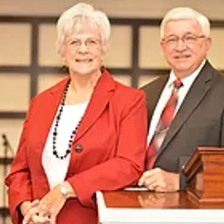

STAFF
Pastors
Rusty & Rebekah Hosmer
"At Open Door, we believe you'll feel like family from your very first visit and pray that the
annointed teaching that comes from our pulpit will bless, encourage, challenge, and inspire your
daily life.
Contact us any time. We'd love the opportunity to meet and pray for you.
Be blessed!""
Founding Pastors

Terry & Shirley Hosmer
"Welcome to Open Door! We are thankful that you've taken the time to check out our online home and hope that you'll visit us for church one day soon! We've been in ministry for 40 years and things only get sweeter as time goes by! Thanks again for stopping by!"
Worship Minister
Sandie Giles
"As worship pastor at Open Door, it's my prayer that you'd be able to shake loose of the daily grind, every obstacle that you face, and come into the very presence of God as you're led by dynamic worship leaders every single week. My goal in corporate worship is for you to find a safe and honest place to "cast your cares on Him". See you Sunday!"